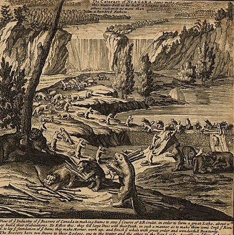
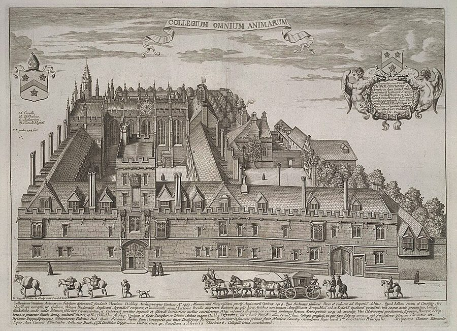

这一页在做什么
一样东西到底值多少？拿钱来量量不准，因为金银自己也会涨会跌。第 5 章斯密想找一把不会伸缩的尺子，他挑中了劳动；第 6 章他把价格拆开，看里面装着谁的收入：工人的、老板的、地主的。这一页是全书被后人改写得最多的地方之一，李嘉图和马克思都从这里出发。读的时候抓两条线：斯密说的是劳动「衡量」价值，还是「决定」价值；他提的问题，今天的人怎么回答。

他想证明什么
上一页末尾，斯密说要去找交换价值的规律。这一页他做了两件事。第 5 章找尺子：分工以后，一个人富不富，看他能买到多少别人的劳动，所以劳动是交换价值的「真实尺度」；金银会因为美洲的矿山变便宜，同样多的劳动对干活的人却总是同样的辛苦，所以劳动量出的是真实价格，钱量出的只是名义价格。说完他自己承认，劳动量很难量，实际只能拿谷物价格凑合。第 6 章拆价格：在还没有资本、土地也没归私人的原始社会，东西按花的劳动交换；有了资本，价格里多出利润；土地成了私产，又多出地租。一国一年的产物也就分成工资、利润、地租三份。
读法：先读 §1 和 §5，加起来两千多字，知道斯密说了什么就够了。§3 大学收谷物地租的故事最好看；§4 是 18 世纪英国金币和银币的比价，今天没有金属本位，整节可以跳过。
第 5 章把「劳动是唯一不变的价值尺度」说得很笃定，可这是全书被改写得最彻底的地方之一：今天没有经济学家这样衡量价值，见「今天怎么看」。
斯密落在哪：劳动是衡量一切商品交换价值的真实尺度，钱只是名义上的尺度；在有资本、有地主的社会里，价格分成工资、利润、地租三块，这三块也是一国一切收入的源头。
分节地图
这一页是卷一第 5、6 章，本站切成 7 节。粗体是本站起的节名；「杨译里找」后面是杨译里这一节开头附近的小标题或第一句；灰色的英文是原文这一节开头的几个词。标「先读」的是最短读法。
- 劳动是最初的价格劳动是交换价值的真实尺度EVERY man is rich or poor …富不富，看能支配多少别人的劳动。第 2 段「辛苦和麻烦」最常被引来证明斯密是劳动价值论者；留意同一段里其实有两种说法。
- 金银会变，劳动不变？但劳动虽然是所有商品的交换价值…But though labour be the real …劳动难量，人们改用钱算；可金银会变，所以钱只是名义价格。第 7 段拿会伸缩的量具作比，好看；注意他说的是劳动「可以说」同值。
- 大学地租为什么要收谷物商品和劳动的真实价格和名义价格…The distinction between the real and …名义和真实之分的实际用处：1576 年的法律让大学三分之一的地租收谷物，两百年后这一份顶得上其余两份的两倍。有空的节里最值得读。
- 金币、银币和造币厂价格随着产业的进步，商业国发现…In the progress of industry, commercial …18 世纪英国金币银币的法定比价、造币厂价格和铸币税。今天的钱不和金银挂钩，读了收获小，可以跳过；第 35 段斯密说洛克解释错了，可当花絮看。
- 海狸、鹿和不劳而获的地主劳动数量最初是唯一的价格尺度IN that early and rude state …全页的核心：海狸换两头鹿，只限于原始社会；有了资本加上利润，土地私有又加上地租。第 6 段两家工厂的算术，说明利润不是管理的工钱。
- 从面包到苏格兰卵石在一个进步的社会中，这三部分一般都存在In every society the price of …跟着谷物、面粉、面包、亚麻布一路拆价格。第 11 段斯密自己问出「第四部分」，又把它绕过去，是后人批评的地方。第 15 段捡石子的穷人最可爱。
- 工资、利润、地租三种收入由于每一种具体商品的价格…As the price or exchangeable value …三块价格就是三种原始收入，利息、税、官俸都从这里转出来。后半讲自己种地的乡绅、园丁怎样把三种收入混着叫，好读。
先用中文过一遍：这一页的概念
这一页用到的三个概念。讲的是概念本身；每块的「今天」说今天怎么看它。
§2真实价格和名义价格 real price; nominal price
名义价格是标签上的钱数；真实价格是这些钱实际换得到多少东西。月薪涨了一成，物价涨了两成，名义工资涨了，真实工资其实降了。斯密的「真实」用劳动来量：一样东西真实值多少，看它能换来多少别人的劳动，或者自己要为它吃多少辛苦。钱这把尺子会伸缩，金银一多，同样一镑就不经花了。要提醒一句：斯密的「真实价格」不是「实际成交价」，成交价在他那里恰恰是名义价格。
今天：今天说「实际」和「名义」，是经济学的基本功。但今天的实际值是拿一篮子商品的物价指数（比如消费者物价指数）扣掉通胀，不用劳动量；斯密自己在第 22 段也退一步，拿谷物价格凑合。
在这一页：第 7–9 段立起这对概念，第 10–22 段拿大学地租讲它的用处。页 05 讲货币工资和真实工资，用的就是它。
§1劳动价值论 labour theory of value; labour commanded, labour embodied
说东西的价值归根到底和劳动有关的理论。斯密这两章里其实有三种说法，常被混成一种。一是衡量：东西值多少，看它能换来多少别人的劳动，后人叫「支配的劳动」。二是代价：东西真实的价钱，是得到它要吃的辛苦和麻烦。三是决定：在原始社会，东西按生产它花了多少劳动来交换，后人叫「耗费的劳动」。前两种讲的是尺子，第三种才是说劳动决定交换比例，而斯密只把它放在没有资本和地主的时候。一件东西花一天工夫做成，却可能换来两天的劳动，所以第一种和第三种并不是一回事。
今天：李嘉图 1817 年批评斯密在两种劳动之间摇摆，自己改用耗费的劳动；马克思接过去，建起剩余价值论。1870 年代边际革命以后，主流经济学认为价格由需求和成本一起决定，劳动只是成本之一。
在这一页：第 5 章第 1–3、7 段讲尺子；第 6 章第 1–4 段讲原始社会，第 7 段说有了资本，劳动量就不再是唯一的因素。
§5价格的三个组成部分 component parts of price: wages, profit, rent
把一样东西的售价一层层拆开，看钱最后落进谁的口袋。一个面包的价钱里，有面包师傅的工资和老板的利润，有磨坊的工资和利润，有一路运输的工资和利润；再往前，是种麦的雇工的工资、农场主的利润、地主的地租。斯密说，任何价格最后都分解成工资、利润、地租这三块，或者其中一两块；全国一年的产物合起来也一样，分给工人、资本家和地主，成为所有收入的源头。利息、税、官俸，都从这三块里转出来。
今天：国民经济核算的「收入法」还是这个思路：劳动者报酬、营业盈余、生产税。差别是今天算明白了每年要补回用掉的机器、厂房和原料，斯密在第 11 段把这一块绕了过去。
在这一页：第 6 章第 5–8 段一块块加上去，第 10–17 段推到全国。三块各有平均水平，合成页 04 的自然价格。
故事和背景
这一页里的故事和 18 世纪的东西，按在书里出现的顺序排。
§1霍布斯说财富就是权力，斯密改了一个字眼
第 3 段斯密借了霍布斯一句话：财富就是权力。随即又改：继承一大笔家产的人，不一定就有了政治权力或兵权，家产也许能帮他去谋，但光有家产并不带来这些；家产直接给他的，只是购买的权力，能支配市场上别人的劳动和劳动的产物。Cannan 在注里查了霍布斯《利维坦》（1651）的原话，其实是「财富加上慷慨才是权力，因为能招来朋友和仆从」。霍布斯讲的是政治里的人情，斯密把它换成了经济学的说法：钱的力量，就是能使唤多少人为你干活。
§3三分之一的谷物，顶得上三分之二的两倍
1576 年，也就是伊丽莎白一世在位第 18 年，议会通过一项法律：牛津、剑桥各学院和伊顿、温切斯特两所公学出租土地，地租至少三分之一要收谷物，交实物或者按附近市场的时价折钱。推动它的是当过伊顿公学院长的 Thomas Smith 爵士。Cannan 注里引了 17 世纪史家 Fuller 的记载：据说别的议员都看不出这有什么区别，这位爵士却料到人口会增、粮价会涨。两百年后，斯密引法学家 Blackstone 的说法：这三分之一谷物地租折成的钱，已经接近另外三分之二的两倍。换句话说，收钱的那部分只剩原来价值的四分之一左右。斯密特意强调，这段时间英国铸币的含银量几乎没变，缩水全是因为白银本身跌了价。

§5「喜欢在没播种的地方收获」
第 8 段是全书挖苦地主最出名的一句：土地一旦全成了私产，地主们「也和所有其他人一样」，喜欢在自己没播种的地方收获，连林子里的木头、田里的草也要收租。这句话化用了《新约》里按才受托的比喻，原话是仆人说主人「没有种的地方要收割」。1814 年出版注释本《国富论》的 David Buchanan 回了一句（Cannan 注里引了）：他们确实喜欢；可问题是，这种看似不讲理的要求，为什么人人照付？别人也都喜欢不劳而获，偏偏只有地主做得到。地租到底凭什么，斯密在第 11 章（页 09）再谈。
§6只有工资的价格：苏格兰卵石
第 15 段斯密找了几样只含一两块的东西。海鱼：渔夫的工资，加上渔业资本的利润，大海不收租。河里的鲑鱼渔场就不同，要付租金。最小的例子是苏格兰海边的穷人：他们沿着海岸捡一种五彩的小石子，人称「苏格兰卵石」，卖给石匠，换来的钱全是自己的工资，既没有地租，也没有利润。「苏格兰卵石」后来泛指苏格兰出产的玛瑙一类半宝石，19 世纪镶成胸针、别针，风行一时。
原典：斯密的原话
这本书是公版书，下面整段放斯密的原文，配本站的白话译。灰字说它在杨译的哪里，最后一行是这段里今天容易读错的 18 世纪词。
§1辛苦和麻烦
最常被引来证明「斯密是劳动价值论者」的一段，整段。在杨译这一章开头，小标题劳动是对一切东西最初付出的价格下面。
The real price of every thing, what every thing really costs to the man who wants to acquire it, is the toil and trouble of acquiring it. What every thing is really worth to the man who has acquired it, and who wants to dispose of it or exchange it for something else, is the toil and trouble which it can save to himself, and which it can impose upon other people. What is bought with money or with goods is purchased by labour, as much as what we acquire by the toil of our own body. That money or those goods indeed save us this toil. They contain the value of a certain quantity of labour which we exchange for what is supposed at the time to contain the value of an equal quantity. Labour was the first price, the original purchase-money that was paid for all things. It was not by gold or by silver, but by labour, that all the wealth of the world was originally purchased; and its value, to those who possess it, and who want to exchange it for some new productions, is precisely equal to the quantity of labour which it can enable them to purchase or command.
本站译：每样东西的真实价格，也就是想得到它的人真正付出的代价，是得到它要吃的辛苦和麻烦。一个人已经有了这样东西，想把它脱手或换点别的，那它对他真正值多少？值的是它能替他自己省下、又能推给别人去受的那份辛苦和麻烦。拿钱或货物买来的东西，和靠自己身体受累挣来的东西一样，都是用劳动买的。那些钱或货物的确替我们省掉了这份辛苦。它们里面装着一定量劳动的价值，我们拿它去换当时被认为装着同样多劳动价值的东西。劳动是最早的价格，是为一切东西付出的头一笔买价。世上所有的财富，起初都不是用金子银子，而是用劳动买来的；对拥有财富、想拿它换些新产品的人来说，财富的价值，正好等于它能让他们买到、使唤得动的劳动量。
这一段藏着两把尺子：开头说真实价格是「付出的辛苦」，末尾说价值等于「能买到的劳动」。一件东西花一天工夫做成，却可能换来两天的劳动，两把尺子量出来不一样。李嘉图 1817 年挑的就是这个毛病。
- toil and trouble辛苦和麻烦，口语里成对说，意思是受累
- command支配，这里是「能换来、使唤得动」别人的劳动
- purchase-money买价，买东西付出去的那笔钱
§5一只海狸换两头鹿
经济思想史上最有名的思想实验之一，整段，连同开头的限定一起读。在杨译第 6 章开头，小标题劳动数量最初是唯一的价格尺度下面。
IN that early and rude state of society which precedes both the accumulation of stock and the appropriation of land, the proportion between the quantities of labour necessary for acquiring different objects seems to be the only circumstance which can afford any rule for exchanging them for one another. If among a nation of hunters, for example, it usually costs twice the labour to kill a beaver which it does to kill a deer, one beaver should naturally exchange for or be worth two deer. It is natural that what is usually the produce of two days or two hours labour, should be worth double of what is usually the produce of one day’s or one hour’s labour.
本站译：在资本还没积攒起来、土地也还没被人占为己有之前，社会处在早先那种粗陋的状态。那时，得到各种东西各要花多少劳动，这几个量之间的比例，看来是唯一能给它们的相互交换定个规矩的东西。比方在一个靠打猎为生的民族里，要是杀一只海狸通常要花的力气是杀一头鹿的两倍，那么一只海狸自然就该换两头鹿，或者说值两头鹿。通常要两天或两小时劳动才得来的东西，值通常一天或一小时劳动所得的两倍，这是很自然的。
限定词要留住：seems（看来）、usually（通常），还有开头那句「在资本积累和土地私有之前」。常有人拿这段当「斯密说价值由劳动决定」的证据，可他只把它放在一个早已过去的原始社会里；第 7 段紧接着说，有了资本，劳动量就不再是唯一的因素。
- rude原始的、粗陋的，指社会还不开化，不是「粗鲁」
- stock资本，这里指积攒下来、可以拿去雇人干活的东西
- appropriation of land土地被人占为私有
§5地租是采集的许可费
全书挖苦地主最出名的一句，整段。在杨译第 6 章小标题当土地全都变为私有财产时，地租成为大多数商品价格的第三个组成部分下面。
As soon as the land of any country has all become private property, the landlords, like all other men, love to reap where they never sowed, and demand a rent even for its natural produce. The wood of the forest, the grass of the field, and all the natural fruits of the earth, which, when land was in common, cost the labourer only the trouble of gathering them, come, even to him, to have an additional price fixed upon them. He must then pay for the licence to gather them; and must give up to the landlord a portion of what his labour either collects or produces. This portion, or, what comes to the same thing, the price of this portion, constitutes the rent of land, and in the price of the greater part of commodities makes a third component part.
本站译：一国的土地一旦全部成了私产，地主们也和所有其他人一样，喜欢在自己没播种的地方收获，连土地上天然长出的东西也要收租。林中的木材、田里的青草、大地上一切天然的果实，在土地还是大家共有的时候，劳动者只要花力气去采就行；如今就连对他来说，这些东西也被额外定了一个价。他得先付钱买采集的许可，还得把自己的劳动采来或种出的东西分一份给地主。这一份，或者说这一份的价钱，就是土地的地租；在大多数商品的价格里，它是第三块组成部分。
杨译漏了「他得先付钱买采集的许可」这一句。意思没有反，但这一句正说出地租的来历：用地的许可费。读译本时把它补上。
- licence许可，这里是付钱换来的采集权
- natural produce天然产物，不用人种就长出来的东西
- component part组成部分，价格里的一块
译本勘误
杨译这两章整体可靠。下面只收会把人读歪的一处。灰字是英文原文那一处的几个词；方框里是杨译的原句，在电子书里搜它。
§2跌到三分之一，不是跌了三分之一数字
Europe to about a third of what
译本：「欧洲的金银价值比原值下降了1/3左右」
原文说，16 世纪美洲的富矿让欧洲金银的价值跌到原来的三分之一左右，也就是跌掉了三分之二。译本读起来像只跌了三分之一。斯密拿这个数说明钱这把尺子伸缩得多厉害，照译本读，就把跌幅看小了一半。
今天怎么看
这两章的主要说法和今天的判断。每条标签判的是那条论点，五种标签的意思：
- 成立今天的经济学和证据支持这句话。
- 部分成立大方向对，细节或适用范围要改。
- 过时说的是 18 世纪的世界，当时也许对，今天的制度和技术已经变了。
- 被推翻后来的经济学或证据说明它错了。
- 有争议经济学界至今没有定论，两边各有代表性的研究。
同样多的劳动对干活的人永远同值，所以劳动是唯一准确、不变的价值尺度
金银随矿山涨跌，谷物年年起伏，只有劳动「可以说」永远是同样的辛苦（第 7 段；初版写的是「必定」），第 17 段他又说这「显然」。今天看，辛苦量不出来，人和人之间也比不了；同一小时的劳动能换到的东西，随着生产率提高越来越多。今天衡量购买力用物价指数，也承认它只是近似；斯密自己最后也只能拿谷物凑合。
§2 第 7 段、§3 第 17、22 段在没有资本和地主的原始社会，交换比例看来只取决于耗费的劳动量
杀海狸的力气是杀鹿的两倍，一只海狸就换两头鹿；更累、更要手艺的活另有加价。今天看，在他设的条件下这个推理站得住：只有劳动一种投入、谁都能改行时，竞争会让价格和劳动成本成比例，讲国际贸易的李嘉图模型就这样假设。可这种社会只是推想，斯密自己也说有了资本，劳动量就不再是唯一的因素。把它推广到一切社会的，是后来的李嘉图和马克思。
§5 第 1–7 段一切商品的价格最终分解为工资、利润、地租，三者是一切收入的原始来源
价格一层层往前拆，全国一年的产物合起来也一样。今天看，拆法留了下来，可漏了每年要补回的那一块，见下面的卡。
§6 第 10–16 段、§7 第 17 段长期合同按谷物定比按货币定更保值，只是年年之间更不稳
大学的谷物地租两百年里比货币地租保值得多，货币地租缩到四分之一左右；可谷价一年一变，收租的人年年起伏。今天看，道理一样：英国 1981 年开始发行和零售物价指数挂钩的国债，养老金、长期合同也常按物价指数调整。今天挂的是一篮子商品，既防长期贬值，又不跟着一样东西乱跳。
§3 第 13–17 段书里的说法：一切商品的价格最终分解为工资、利润、地租，三者是一切收入的原始来源
- 书里
- 第 10–17 段。第 11 段斯密自己问：谷价里是不是还要第四部分，补偿农场主用旧的马和农具？他答：马的价格本身也由那三块组成，所以仍然只有三块。
- 当时
- 18 世纪的作坊工具少、厂房小，斯密说的「每年使用的资本」其实是一年的开支，主要是原料和工钱（Cannan 注 2）。
- 今天
- 拆法对：国民账户用收入法算 GDP，就拆成劳动者报酬、营业盈余（大致相当于利润和租金）、生产税减补贴。连第 21–23 段的园丁也有了位置：自雇者的收入分不清哪份是工钱、哪份是利润，统计上单列为「混合收入」。说他漏了一块，也有道理：单看一件东西，往前一层层追，大多能拆成各年的工资、利润、地租；可就一年来说，今年的产物里有一部分要拿去补今年用掉的机器、种子和原料，那不是谁今年的收入。所以账上营业盈余分「毛」和「净」，中间差着固定资本的消耗。Cannan 在注里说斯密这话只对构成收入的那部分产物成立；马克思在《资本论》第二卷里专门批评这一点，后人称作「斯密教条」。核对于 2026-10。依据：苏格兰政府《GDP 季度国民账户：质量和方法》收入法一节；Marx, Capital vol. II, ch. 19。
斯密是劳动价值论者吗
主流看法：思想史上一般把斯密算作劳动价值论的源头之一，也都承认他摇摆。李嘉图 1817 年《政治经济学及赋税原理》第一章就批评他：一会儿说价值看生产花的劳动，一会儿又拿能支配的劳动、有时拿谷物当尺子。马克思从李嘉图那里接过「耗费的劳动」，建起剩余价值论。1870 年代 Jevons、Menger、Walras 的边际革命以后，主流经济学不再用劳动解释价格。
斯密的看法：第 5 章第 1 段说，劳动是衡量一切商品交换价值的真实尺子；第 6 章第 1 段说原始社会里劳动量「看来是」唯一的交换准则；第 7 段说有了资本，它就不再是唯一的因素；文明社会的价格，他用工资、利润、地租三块加起来解释（第 10 段）。
本站的评论：「斯密主张劳动决定价值，马克思继承了他」，只对了一小半。斯密的劳动主要是尺子；决定价格的，他用的是三块成本相加；劳动决定交换比例，他只放在海狸和鹿的世界里。尺子这一面过时了，没有永远同值的劳动。可他追问的事一点没过时：两百年前的一镑和今天的一镑怎么比？经济学家 Nordhaus 研究照明史时，问的就是一天的工钱能买多少光：古巴比伦约十分钟，煤油灯时代约五小时，1990 年代约两万小时。他发现普通物价指数把这两百年照明变便宜的程度低估了九百到一千六百倍。斯密的问题，今天换了工具在答。
本站的总体看法：读 §1 和 §5 就够，知道斯密说了什么、过时在哪。§3 的大学地租是这一页最好看的故事，也是「名义和实际」最好的一课；§4 放心跳过。劳动价值这一块当思想史读，别当今天的经济学读。
精彩回顾
隔几周回来时看这里。想不起来，点节号回到那一节。
一句话：斯密想拿劳动当量价值的尺子，又把价格拆成工资、利润、地租；尺子过时了，拆法留了下来。
1576 年的法律让大学三分之一的地租收谷物；两百年后，这一份折成的钱接近其余两份的两倍。
§3杀海狸的力气是杀鹿的两倍，就换两头。斯密只把它放在没有资本和地主的原始社会。
§5劳动当不变的尺子过时了，可「两百年前的钱值多少」这一问还在：一天的工钱，煤油灯时代换约五小时的光，1990 年代约两万小时。
§2自己种园子的园丁，既是地主又是农场主又是雇工，收入却全被当成工钱。今天统计里叫「混合收入」。
§7